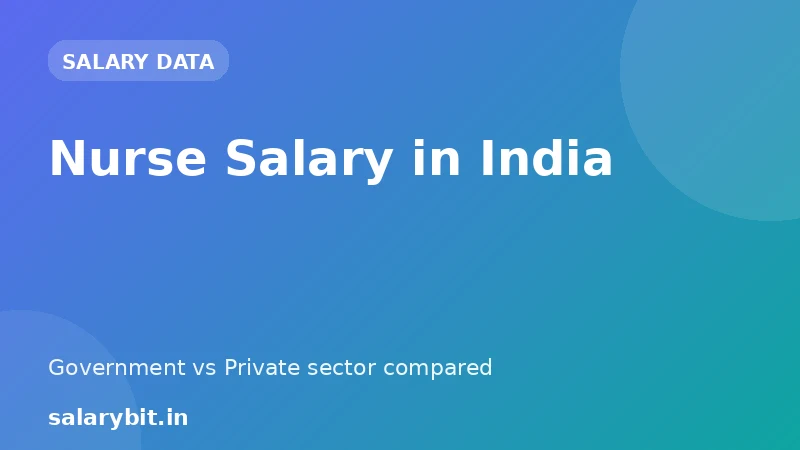

Nurse Salary in India: Government vs Private
The nursing profession is considered one of the most respected and in-demand careers in India. With a vast increase in demand for healthcare services, the nursing industry is booming, and the salaries are rising. In this article, we will explore the nurse salary in India, comparing government and private sector salaries. We'll also discuss the highest paying jobs, average salaries, and growth opportunities in the nursing profession in India.
Nurse Salary in Government Sector in India
The salary of nurses in the government sector in India varies based on their qualification, experience, and designation. According to the latest data available, here are the average salary ranges for nurses in the government sector:
Government Nurse Salary Ranges:
| Qualification | Experience | Designation | Salary Range (in Lakhs) |
|---|---|---|---|
| B.Sc Nursing/B.Sc Nursing (Hons) | 1-3 years | Staff Nurse | 4-6 lakhs |
| B.Sc Nursing/B.Sc Nursing (Hons) | 3-5 years | Staff Nurse | 6-8 lakhs |
| PG Diploma in Nursing | 1-3 years | Staff Nurse | 5-7 lakhs |
| PG Diploma in Nursing | 3-5 years | Staff Nurse | 7-9 lakhs |
| M.Sc Nursing | 1-3 years | Senior Staff Nurse | 8-10 lakhs |
| M.Sc Nursing | 3-5 years | Senior Staff Nurse | 10-12 lakhs |
Nurse Salary in Private Sector in India
The salary of nurses in the private sector in India also varies based on their qualification, experience, and designation. According to the latest data available, here are the average salary ranges for nurses in the private sector:
Private Nurse Salary Ranges:
| Qualification | Experience | Designation | Salary Range (in Lakhs) |
|---|---|---|---|
| B.Sc Nursing/B.Sc Nursing (Hons) | 1-3 years | Nursing Staff | 6-8 lakhs |
| B.Sc Nursing/B.Sc Nursing (Hons) | 3-5 years | Nursing Staff | 8-10 lakhs |
| PG Diploma in Nursing | 1-3 years | Nursing Staff | 7-9 lakhs |
| PG Diploma in Nursing | 3-5 years | Nursing Staff | 9-11 lakhs |
| M.Sc Nursing | 1-3 years | Nursing Manager | 12-15 lakhs |
| M.Sc Nursing | 3-5 years | Nursing Manager | 15-18 lakhs |
Comparison of Nurse Salary in Government and Private Sector in India
As we can see from the tables above, the salary ranges for nurses in the private sector are generally higher than those in the government sector. However, the salaries in the government sector tend to be more stable and less prone to fluctuations.
Why Choose a Career in Nursing?
Nursing is a rewarding and challenging career that offers a wide range of opportunities for growth and development. With a growing demand for healthcare services, the nursing profession is booming, and the salaries are rising. Additionally, nursing has a wide range of specializations, from pediatrics to gerontology, and from cardiovascular to neuroscience. This variety offers nurses the opportunity to work in different settings, from hospitals to clinics, and from private practices to government institutions.
What are the Job Prospects for Nurses in India?
The job prospects for nurses in India are excellent. With the growing demand for healthcare services, the nursing industry is booming, and the salaries are rising. Nurses can work in various settings, from hospitals to clinics, and from private practices to government institutions. Additionally, nurses can also work as consultants, managers, or administrators.
FAQs
Q: What is the average salary of a nurse in India?
A: The average salary of a nurse in India varies based on their qualification, experience, and designation. According to the latest data available, the average salary range for nurses in the government sector is between 4-12 lakhs per annum, while in the private sector, it is between 6-18 lakhs per annum.
Q: What are the highest paying jobs for nurses in India?
A: The highest paying jobs for nurses in India are Nursing Manager, Nursing Consultant, and Nursing Educator. These roles typically require an M.Sc Nursing degree and have a salary range of 12-25 lakhs per annum.
Q: What are the growth opportunities for nurses in India?
A: The growth opportunities for nurses in India are excellent. With the growing demand for healthcare services, the nursing industry is booming, and the salaries are rising. Nurses can work in various settings, from hospitals to clinics, and from private practices to government institutions. They can also work as consultants, managers, or administrators, and have opportunities for higher education and professional certifications.